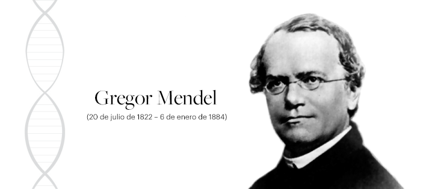

Principios de la Herencia
Reconoce y aplica los principios de la herencia
rodolfo.franco18@tectijuana.edu.mx
rodolfo.franco18@tectijuana.edu.mx
Desde el inicio de la vida, los seres vivos se han reproducido y han heredado a las generaciones posteriores las instrucciones necesarias para que desarrollen y adquieran las características propias de su especie. La información genética necesaria para este proceso se encuentra en la estructura de la molécula del ADN que conforma a los cromosomas, en los cuales se encuentran los genes.
Fue en 1865 que el ser humano empezó a manejar estos conceptos, gracias a que un monje austriaco, llamado Gregor Mendel, quien presentó los resultados de sus estudios acerca de la herencia a los miembros de la Sociedad de Historia Natural de Brunn. Estos estudios fueron considerados como bases de la genética hasta inicios del siglo xx.
